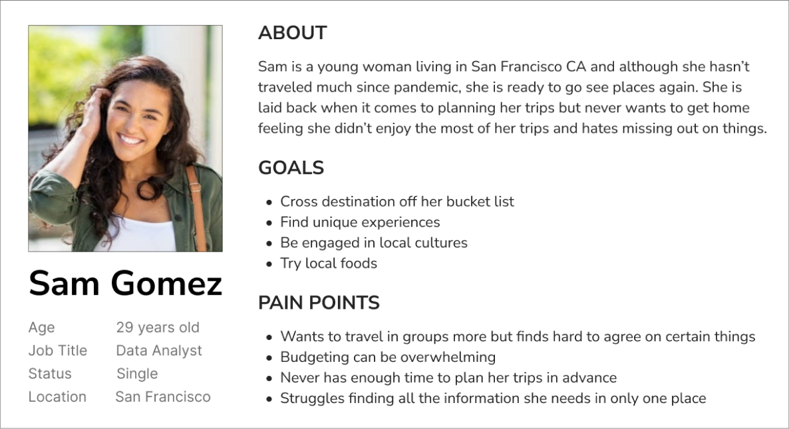

Travelers struggle planning their trips in advance and feel stressed when they get to their destination and don't know where to go or what to do.
“goexpp” is the easiest way to find all the must-do activities and must-see places according to your interests whether planning your trip in advance or making a last minute decision.
As a guy who loves to frequently travel, I got pretty excited about figuring out what are other people’s opinions when it comes to planning their trips. I was also very curious to understand how the global pandemic changed their travel habits.
In this initial research phase, I crafted a user research plan and selected 6 people in the San Francisco area to interview based on a previous proto-persona I defined. My goal was to find out users pain points of how they want to travel in the future. I determined the hypothesis I wanted to explore and set 3 key questions I wanted to be sure to answer:
My other two objectives were to find out what resources people are using to plan and use during their trips and also, what activities travelers are doing and how they find out about them?
“I want to travel like a local and really take something away from the experience”.
“The most stressful part of planning a trip for me is to find things to do on my destination and if I’m traveling with friends, finding things that everybody wants to do”.
“I feel the need to have everything planned, where I’m going, who I’m going with and all the activities I’m going to do.”
Next step was to synthesize my research using an affinity diagram. On this Miro board I translated valuable insights and other data onto sticky notes. I looked for patterns and organized them into categories.
Developing a user persona at this point helped me create a realistic representation of the appropriate audience and a way to test and prioritize features throughout the development process.
Sam Gomez, a young traveling woman, needs to keep herself occupied with unique and memorable local attractions. When traveling she likes to explore the most and doesn't want to feel like she is missing out on anything.
In order to transform my research insights into meaningful next steps, I used my user persona to create a problem statement and ideate on potential solutions.
It is difficult and time consuming for young travelers to find an activity and/or event to do when traveling to a unfamiliar location, causing them to feel overwhelmed and frustrated when planning their trips. I believe I might improve a user’s traveling experiences by developing a mobile app that offers them an easier way to plan their trip in advance or last minute, ensuring they always get back home feeling they enjoyed the most of their trips.
With a problem statement defined, it was brainstorming time. Using the I like, I wish, What if Ideation Method on a Miro board, I came up with a bunch of ideas even including the craziest ones. After ideation, using a feature prioritization matrix I sorted my ideas to prioritize the app features and selected 3 main features:
Next, I define a value proposition for those features and I asked myself: “What does my app do better than any other in its category?
Enjoy the most of your trips, don't miss out on anything. “goexpp” is the most easy and smart way to find all the must-do activities and must-see places according to your own interests at your destination whether planning your trip in advance or making a last minute decision.
The Value Proposition statement was my jumping-off point as I moved into storytelling, it informed me how to create my user scenario.